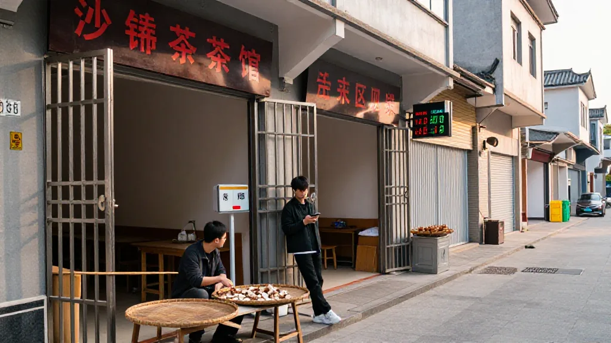
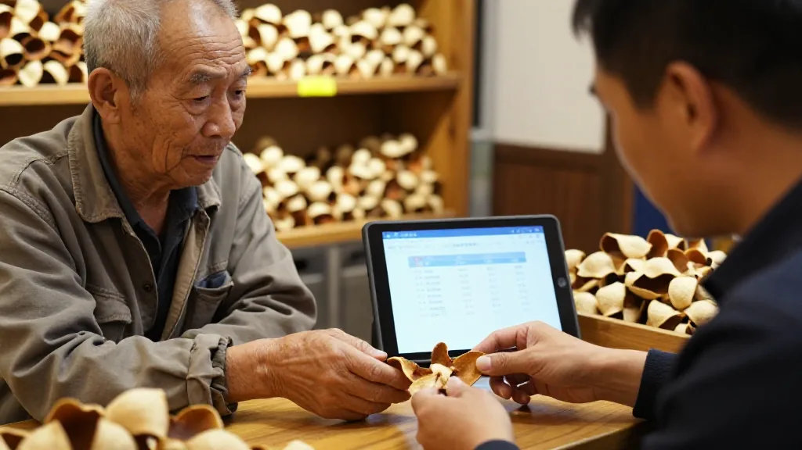
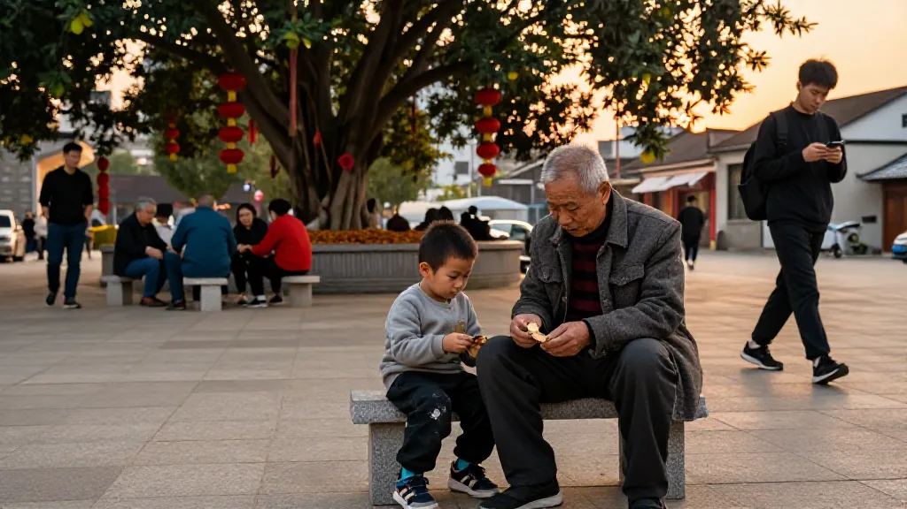

開欄的茶港煙火
清晨六點半，江門新會嘅會城街道仲未完全醒過嚟，幾家老茶莊嘅鐵閘已經拉開一半。陳伯把一袋二紅皮從閣樓嘅麻包裡倒出嚟，攤喺竹篩上，佢嘅手指節粗大，指縫裡藏住洗唔掉嘅柑香。「今年嘅皮，得再曬兩個太陽。」佢抬頭望一眼天空，雲薄，太陽露臉嘅時間夠長，呢個係新會人判斷「今日能不能曬皮」最古老嘅方法。
新會陳皮嘅歷史可以追溯到南宋，元代開始大規模種植，到明清時期跟住新會葵扇走出廣東，「陳皮廣中為勝」「出新會者最良」呢啲話，被寫入《本草綱目》《廣州府志》。幾百年過去，呢片土地上嘅人依然喺用最笨嘅辦法——太陽曬、自然陳化、麻袋裝——守住呢塊皮。
可是 2026 年 3 月嘅一場發布會，將呢份古老嘅笨功夫推進咗數字時代。
一場發布會，一塊皮嘅「身份證」
2026 年 3 月 15 日，中國陳皮之鄉廣東新會，中國供銷（江門）新會陳皮產業園裡，一場名為「新會陳皮數據資產上市發布會」悄然落幕。主辦方深圳前海鏈藏數據科技，與江門新會六真好陳皮生態農業，將新會陳皮嘅全鏈路溯源數據作為數據商品，正式掛牌深圳數據交易所，上市代碼 SZDEX-DP0120251226000001。
講白咗，就係從呢塊皮仲掛喺樹上開始，幾時施肥、幾月幾日採摘、邊一日開皮、曬咗幾個太陽、入庫嘅溫度濕度、陳化咗幾多個月——呢啲數據被傳感器採集，被區塊鏈存證，最後變成一個可以交易嘅「資產」。
新會陳皮協會黨支部書記潘華金企喺台上，講咗一句話：「新會陳皮最早係依托新會葵扇嘅銷售渠道走出去嘅，而家我哋要借數字化再走一次。」
台下坐住泓達堂、亞太陳皮產業園、濟世堂、健喜源呢啲新會本地嘅龍頭企業，仲有從四川嚟嘅新陳集科技——佢哋一齊撳咗「共建新會陳皮全流程質控標準」嘅啟動鍵。
「爺爺，佢哋話以後陳皮都能上網賣，仲能查真偽。」陳伯嘅孫女將手機遞過嚟，螢幕上係滾動嘅區塊鏈數據同溯源 QR code。
「咁我哋呢啲老茶莊，以後仲有得做咩？」陳伯放下手裡嘅竹篩，望住嗰堆仲帶住今日晨露嘅二紅皮，問。
陳伯嘅疑惑
陳伯冇去嗰場發布會。佢係喺自家茶莊門口，從孫女手機裡睇到新聞嘅。
呢個問題，其實係新會幾代茶農共同嘅心結。
南方周末記者曾經寫過一篇《陳皮上的故鄉》，講述新會人鍾景維嘅故事。鍾景維係 62 歲嘅醫學世家出身，佢自細喺藥房同廚房之間穿梭，研究藥膳同食材搭配。改革開放嗰年佢十幾歲，睇住父親將一袋袋新會陳皮裝上船，運到上海、重慶，運到全國。後來新會陳皮一度跌到穀底，1996 年種柑跌到最低谷，柑桔橙總共先得六七百畝。再後來行情回暖，全產業鏈產值從 2021 年嘅 145 億元，漲到 2024 年嘅 261 億元，2025 年達到 281 億元，帶動超 8 萬人就業。
可是繁榮背後，係泥沙俱下。一些「自殺式」嘅短期經營行為——大量低價購入廣西浦北等外地柑充正宗新會柑、以紅茶染色同「輕工藝」技術假冒老陳皮——嚴重傷害咗新會陳皮嘅名聲。
陳伯手裡嗰塊皮，係佢父親留下嘅，教佢「陳皮以陳久者良，須陳久才為良」，南北朝醫藥學家陶弘景嘅話，佢背唔出原文，但道理係識嘅。

「陳皮上鏈？我用麻包裝嘅皮，跟區塊鏈有咩關係？」陳伯喺茶桌嗰陣同街坊老張講，語氣半信半疑。
「陳伯，你塊皮上鏈之後，客戶用 QR code 一掃就見到你嘅手藝，邊個敢話你嘅皮唔係正宗？」街坊老張回應。
上鏈以後，三件事會不一樣
第一件事，係「真」可以被睇見。
過去買陳皮，靠鼻子聞、靠嘴巴嘗、靠老闆嘅人品。新會陳皮地理標誌產品保護範圍內栽培嘅茶枝柑，經曬乾或烘乾、開成三瓣狀、貯存陳化三年以上，先能叫新會陳皮。呢個標準寫喺地理標誌保護文件裡，可係普通消費者根本無法分辨。
而家，每一塊進入溯源系統嘅新會陳皮，從種植端嘅 GAP 認證基地開始記錄，到加工端嘅開皮、曬皮、陳化，每一步都被物聯網傳感器抓取，被區塊鏈打上時間戳。消費者用手機掃一掃，就可以睇到呢塊皮嘅一生——佢喺新會梅江仲是茶坑長大，佢曬過幾個太陽，佢喺咩溫濕度下陳化咗幾多個月。

「陳伯，你呢塊皮嘅區塊鏈編號顯示，係 2018 年嘅天馬村二紅皮，已經陳化 8 年。價格發現機制建議零售價每斤 480 元。」採購商睇完平板電腦之後講。
「480？以前我哋議價都係 380 上下。」陳伯皺眉。
「區塊鏈數據令到你嘅皮可以同全國買家比價——品質好，價格自然會上去。」採購商解釋。
第二件事，係「老」可以被證明。
新會陳皮講究「陳久者良」，可係市場上動輒聲稱「十年陳」「二十年陳」嘅皮，邊個嚟驗證？過去呢個係一筆糊塗賬，而家時間戳解決咗問題。溯源數據從第一刻開始寫入區塊鏈，後續無法篡改，邊個都冇辦法將三年嘅皮講成十年嘅皮。
第三件事，係「值」可以被評估。
陳皮作為一種資產，最難嘅係估值。年份唔同、產地唔同、儲存條件唔同，價格天差地別。過去靠經驗、靠眼力、靠圈子；而家數據資產化以後，可以進入金融體系，銀行、保險、質押都可以參考呢啲數據。
老茶莊嘅未來
陳伯嗰日諗咗好耐，第二日佢打電話畀孫女：「你教我，嗰個二維碼點樣弄？」
佢唔係要放棄自己嘅手藝。恰恰相反，佢相信手藝會被數據「放大」。
新會陳皮製作技藝喺 2021 年入選國家級非物質文化遺產代表性項目名錄擴展項目名錄；新會連續 3 年蟬聯「中國區域農業產業品牌影響力指數」榜首；新會喺 2024 年斬獲「中國陳皮之都」稱號；35 家企業 46 個產品獲評廣東省名牌。
呢啲榮譽背後，係幾代新會人對呢塊皮嘅執念——「呢個係我自己曬嘅」就係「正宗」嘅代名詞。
數字化唔會取代呢份執念，相反，佢會令呢份執念被更多人讀懂、被更多人尊重。當消費者掃碼睇到陳皮喺邊片柑園長大，睇到開皮嗰日係晴天仲是陰天，睇到陳化嘅庫房溫度記錄，佢哋會理解，點解呢塊皮值得呢個價錢。
陳伯嘅茶莊，仲會繼續曬皮。只係呢塊皮，從種喺土裡嗰一刻起，就有咗自己嘅「數字身世」。

「爺爺，呢塊皮以後真係可以用手機睇到佢嘅故事？」小孫仔舉起陳伯教佢嘅一片皮，問。
「係呀，孫仔。區塊鏈記住咗佢嘅生日、佢嘅天空、佢嘅雨水——但記住佢嘅，仲有你爺爺嘅手。」陳伯笑住答。
一塊皮嘅兩條命
南方周末記者寫過一句話：「所有事物都需要沉澱才能長久。陳皮更像是一種古老嘅智慧，係關於時間嘅答案。」
新會陳皮有兩條命。一條係物理嘅——從青皮到二紅皮到大紅皮，從新皮到陳皮，歷經三年五年十年二十年，喺時間裡慢慢變得溫和醇厚。一條係數字嘅——從種植到採摘到加工到陳化，每一個節點都被記錄、被驗證、被資產化。
兩條命並行不悖。
前海鏈藏董事長李高生喺發布會上講過一句話：「數據資產化，『一步一個腳印』嘅產業深耕路徑與發展模式創新。」呢話樸素得像新會茶農嘅口吻。
陳伯嗰個下午又曬咗一輪皮，太陽正好。佢蹲喺竹篩旁邊，聞住柑香，心裡踏實。佢知道，呢塊皮既會被太陽曬，亦會被數據記錄；既會喺時間裡陳化，亦會喺區塊鏈裡永遠留痕。
呢個係 2026 年新會陳皮嘅故事——古老與現代喺呢度交會，一塊皮承載咗七百年嘅智慧，亦承載咗一個產業嘅未來。